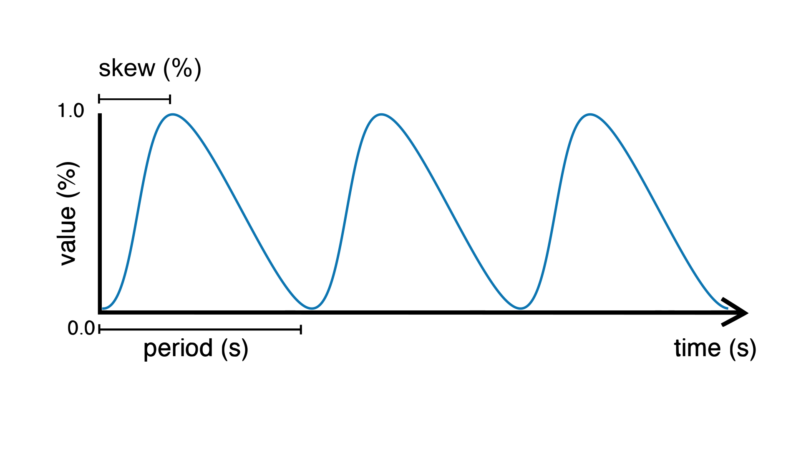

Getting started
This short introduction will guide you through the first steps of using Plaquette.
We also recommend watching our introductory video tutorial series.

Step 1: Install Plaquette
If you do not have Arduino installed on your machine you need to download and install the Arduino IDE for your platform.
Once Arduino is installed, please install Plaquette as an Arduino library following these instructions.
Step 2: Your first Plaquette program
We will begin by creating a simple program that will make the built-in LED on your microcontroller blink.
Create a new sketch
Create a new empty sketch by selecting File > New.
IMPORTANT: New Arduino sketches are initialized with some “slug” starting code. Make sure to erase the content of the sketch before beginning. You can use Edit > Select All and then click Del or Backspace.
Include library
Include the Plaquette library by typing:
#include <Plaquette.h>
Create an output unit
Now, we will create a new unit that will allow us to control the built-in LED:
DigitalOut myLed(13);
In this statement, DigitalOut is the type of unit that we are
creating. There also exists other types of units, which will be described later.
DigitalOut is a type of software unit that can represent one of the many
hardware pins for digital output on the Arduino board. One way to think about this is that
the DigitalOut is a “virtual” version of the Arduino pin. These can be set to one of two
states: (“on/off”, “high/low”, “1/0”).
The word myLed is a name for the object we are creating.
Finally, 13 is a parameter of the object myLed that specifies the hardware
pin that it corresponds to on the board. In English, the statement would thus read
as: “Create a unit named myLed of type DigitalOut on pin 13.”
Tip
Most Arduino boards have a pin connected to an on-board LED in series with a resistor and on
most boards, this LED is connected to digital pin 13. The constant LED_BUILTIN is
the number of the pin to which the on-board LED is connected.
Create an input unit
We will now create another unit that will generate a signal which will
be sent to the LED to make it blink. To this effect, we will use the
Wave unit type to generate a square
wave oscillating between
“on/high/one” and “off/low/zero” at a regular period of 2.0 seconds:
Wave myWave(2.0);
Create the begin() function
Each Plaquette sketch necessitates the declaration of two functions:
begin() and step().
Function begin() is called only once at the beginning of the sketch
(just like the
setup()
function in Arduino). For our first program, we do not need to perform any
special configuration at startup so we will leave the begin() function
empty:
void begin() {}
Create the step() function
The step() function is called repetitively and indefinitely during
the course of the program (like the
loop()
function in Arduino).
Here, we will send the signal generated by the myWave input unit
to the myLed output unit. We will do this by using Plaquette’s special
>> operator:
void step() {
myWave >> myLed;
}
In plain English, the statement myWave >> myLed reads as: “Take the
value generated by myWave and put it in myLed.”
Upload sketch
Upload your sketch to the Arduino board. You should see the LED on the board blinking once every two seconds at a regular pace.
Et voilà!
Full code
#include <Plaquette.h>
DigitalOut myLed(13);
Wave myWave(2.0);
void begin() {}
void step() {
myWave >> myLed;
}
Step 3 : Experiment!
So far so good. Let’s see if we can push this a bit further.
Change initial parameters of a unit
The Wave unit type provides two parameters when it is created that allows
you to configure the oscillator’s behavior. Both are optional: if not specified, they will
take default values.
Wave myWave(period, skew);
periodcan be any positive number representing the period of oscillation (in seconds)skewcan be any number between 0.0 (0%) and 1.0 (100%), and represents the proportion of the period during which the signal is “high” (ie. “on duty”) (default: 0.5)
Note
We call this step the construction or instantiation of the object myWave.
Try changing the first parameter (period) in the square oscillator unit to change the period of oscillation.
Wave myWave(1.0);for a period of one secondWave myWave(2.5);for a period of 2.5 secondsWave myWave(10.0);for a period of 10 secondsWave myWave(0.5);for a period of half a second (500 milliseconds)
Important
Don’t forget to re-upload the sketch after each change.
Now try adding a second parameter (skew) to control the oscillator’s skew. For a fixed period, try changing the duty cycle to different percentages between 0.0 and 1.0.
Wave myWave(2.0, 0.5);for a skew of 50% (default)Wave myWave(2.0, 0.25);for a skew of 25%Wave myWave(2.0, 0.75);for a skew of 75%Wave myWave(2.0, 0.9);for a skew of 90%
Change parameters of a unit during runtime
What if we wanted to change the parameters of the oscillator during runtime rather than
just at the beginning? The Wave unit type allows real-time modification of
its parameters by calling one of its functions using the . (dot) operator.
For example, to change the period, simply call the following inside the step() function:
void step() {
myWave.period(newPeriod);
myWave >> myLed;
}
Of course, to accomplish our goal, we need a way to change the value newPeriod
during runtime. We can accomplish this in many different ways, but let’s try something
simple: we will use another wave to modulate our wave’s period.
For this, we will be using another type of source called a sine wave and will use its
outputs to change the period of myWave.
Wave myModulator(SINE, 20.0);
This wave will oscillate smoothly from 0 to 1 every 20 seconds.
void step() {
myWave.period(myModulator);
myWave >> myLed;
}
Upload the sketch and you should see the LED blinking as before, with the difference that the blinking speed will now change from blinking very fast (in fact, infinitely fast, with a period of zero seconds!) to very slow (period of 20 seconds).
Tip
If you want to visualize the values of both waves on your computer, you can print them
on the serial port one after the other, separated by a space. Add the following code to
your step() function:
print(myWave);
print(" ");
println(myModulator);
Then, launch the Arduino Serial Plotter by selecting in in Tools > Serial Plotter.
Now try modulating the skew of myWave instead of its period:
myWave.skew(myModulator);
Full code
#include <Plaquette.h>
DigitalOut myLed(13);
Wave myWave(2.0);
Wave myModulator(SINE, 20.0);
DigitalIn myButton(2, INTERNAL_PULLUP);
void begin() {}
void step() {
myWave.period(myModulator);
if (myButton)
myWave >> myLed;
else
0 >> myLed;
}
Learning More
Built-in Examples
You will find more examples here or directly from the Arduino software in File > Examples > Plaquette including:
Using analog inputs such as a photocells or potentiometers
Using analog outputs
Serial input and output
Using wave generators
Time management
Ramps
Basic filtering (smoothing, re-scaling)
Peak detection
Event-driven programming
Controlling servomotors
The Plaquette Reference
The online reference can be accessed here or directly from the sidebar of the Plaquette website. It provides detailed technical documentation for every available unit and function in Plaquette. This reference serves as a go-to resource for understanding the specifics of each component, including their parameters, methods, and behavior.
Here are the key sections of the reference:
Base Units: Introduces foundational units like DigitalIn, DigitalOut, AnalogIn, and AnalogOut. These are the building blocks for interfacing with hardware pins.
Generators: Covers the signal generators Wave and Ramp. These are used to create various types of regular signals.
Timing: Focuses on units related to time management such as Metronome for periodic events and Alarm for duration-based functionality.
Filters: Discusses tools for smoothing, scaling, or normalizing signals, as well as detecting peaks.
Functions: Explains helper functions for tasks like value mapping, signal transformations, and conversions.
Structure: Describes core structural functions and operators.
Extra: Contains miscellaneous units and features.
What’s Next?
With the basics covered, you are now ready to dive deeper into Plaquette’s capabilities. Explore the rest of the guide to learn about specific features and advanced techniques:
Inputs and Outputs: Learn how to use Plaquette to handle a variety of inputs and outputs, including analog, digital, and specialized sensors or actuators.
Generating Waveforms: Understand the different types of wave generators available and how they can be used for oscillatory or periodic behavior.
Working with Time: Delve into Plaquette’s timing management units to handle scheduling and time-based logic in your projects.
Regularizing Signals: Discover methods for automatically scaling and normalizing signals amd respond to peaks.
Managing Events: Trigger actions, schedule events and manage parallel loops using event-driven programming.